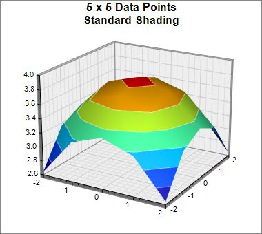
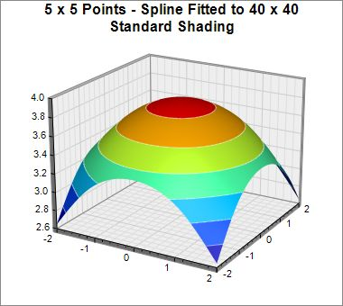
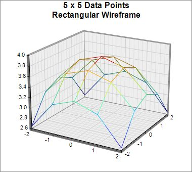
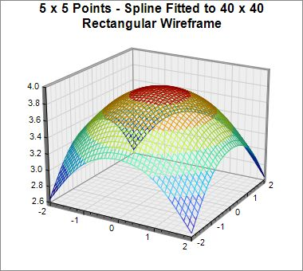
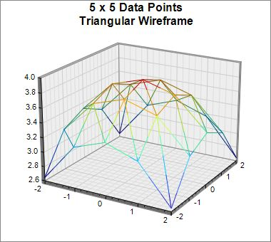
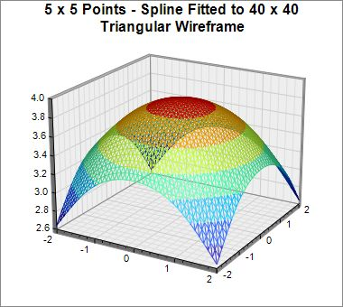

This example demonstrates the rectangular and triangular wireframes of a surface at different interpolation levels, configured using
SurfaceChart.setShadingMode and
SurfaceChart.setInterpolation.
The following is the command line version of the code in "cppdemo/surfacewireframe". The MFC version of the code is in "mfcdemo/mfcdemo". The Qt Widgets version of the code is in "qtdemo/qtdemo". The QML/Qt Quick version of the code is in "qmldemo/qmldemo".
#include "chartdir.h"
#include <math.h>
void createChart(int chartIndex, const char *filename)
{
// The x and y coordinates of the grid
double dataX[] = {-2, -1, 0, 1, 2};
const int dataX_size = (int)(sizeof(dataX)/sizeof(*dataX));
double dataY[] = {-2, -1, 0, 1, 2};
const int dataY_size = (int)(sizeof(dataY)/sizeof(*dataY));
// The values at the grid points. In this example, we will compute the values using the formula
// z = square_root(15 - x * x - y * y).
const int dataZ_size = dataX_size * dataY_size;
double dataZ[dataZ_size];
for(int yIndex = 0; yIndex < dataY_size; ++yIndex) {
double y = dataY[yIndex];
for(int xIndex = 0; xIndex < dataX_size; ++xIndex) {
double x = dataX[xIndex];
dataZ[yIndex * dataX_size + xIndex] = sqrt(15 - x * x - y * y);
}
}
// Create a SurfaceChart object of size 380 x 340 pixels, with white (ffffff) background and
// grey (888888) border.
SurfaceChart* c = new SurfaceChart(380, 340, 0xffffff, 0x888888);
// Demonstrate various wireframes with and without interpolation
if (chartIndex == 0) {
// Original data without interpolation
c->addTitle("5 x 5 Data Points\nStandard Shading", "Arial Bold", 12);
c->setContourColor(0x80ffffff);
} else if (chartIndex == 1) {
// Original data, spline interpolated to 40 x 40 for smoothness
c->addTitle("5 x 5 Points - Spline Fitted to 40 x 40\nStandard Shading", "Arial Bold", 12);
c->setContourColor(0x80ffffff);
c->setInterpolation(40, 40);
} else if (chartIndex == 2) {
// Rectangular wireframe of original data
c->addTitle("5 x 5 Data Points\nRectangular Wireframe");
c->setShadingMode(Chart::RectangularFrame);
} else if (chartIndex == 3) {
// Rectangular wireframe of original data spline interpolated to 40 x 40
c->addTitle("5 x 5 Points - Spline Fitted to 40 x 40\nRectangular Wireframe");
c->setShadingMode(Chart::RectangularFrame);
c->setInterpolation(40, 40);
} else if (chartIndex == 4) {
// Triangular wireframe of original data
c->addTitle("5 x 5 Data Points\nTriangular Wireframe");
c->setShadingMode(Chart::TriangularFrame);
} else {
// Triangular wireframe of original data spline interpolated to 40 x 40
c->addTitle("5 x 5 Points - Spline Fitted to 40 x 40\nTriangular Wireframe");
c->setShadingMode(Chart::TriangularFrame);
c->setInterpolation(40, 40);
}
// Set the center of the plot region at (200, 170), and set width x depth x height to 200 x 200
// x 150 pixels
c->setPlotRegion(200, 170, 200, 200, 150);
// Set the plot region wall thichness to 5 pixels
c->setWallThickness(5);
// Set the elevation and rotation angles to 20 and 30 degrees
c->setViewAngle(20, 30);
// Set the data to use to plot the chart
c->setData(DoubleArray(dataX, dataX_size), DoubleArray(dataY, dataY_size), DoubleArray(dataZ,
dataZ_size));
// Output the chart
c->makeChart(filename);
//free up resources
delete c;
}
int main(int argc, char *argv[])
{
createChart(0, "surfacewireframe0.jpg");
createChart(1, "surfacewireframe1.jpg");
createChart(2, "surfacewireframe2.jpg");
createChart(3, "surfacewireframe3.jpg");
createChart(4, "surfacewireframe4.jpg");
createChart(5, "surfacewireframe5.jpg");
return 0;
}
© 2023 Advanced Software Engineering Limited. All rights reserved.